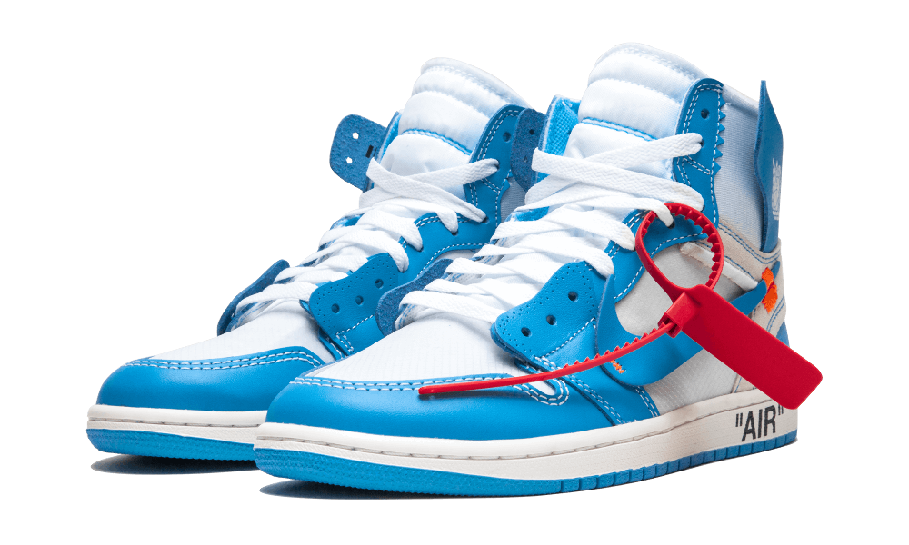

Choose size
Mens's casual shoe
Air Jordan Off-White
$699,99
The Air Jordan 1 Mid is inspired by the first AJ1, giving OG fans a look at the evolution of the Jordan brand since 1985. An Air-Sole unit provides lightweight cushioning. A synthetic and leather upper offers durability and a premium look. Solid rubber outsole improves traction on various surfaces.